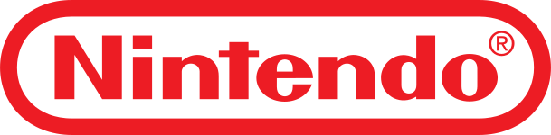
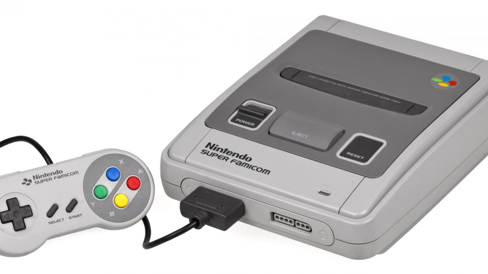
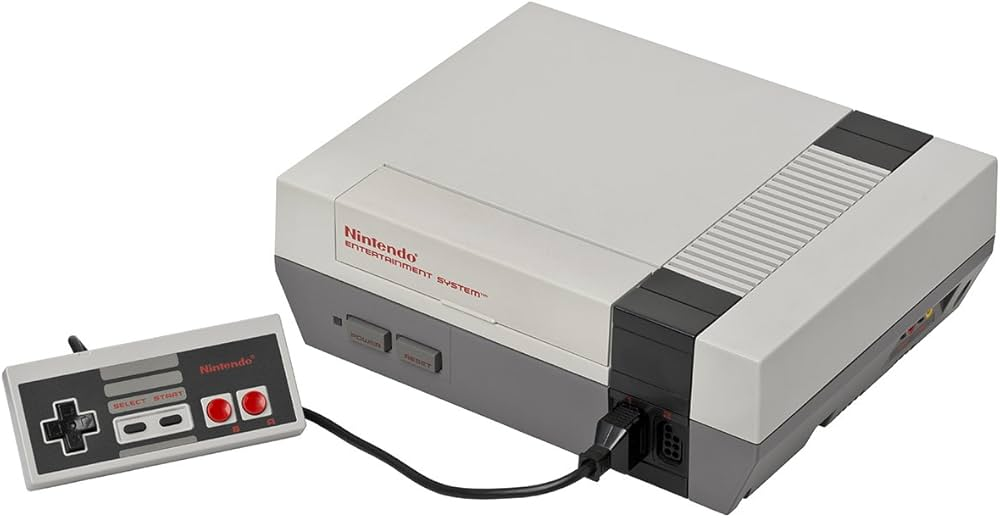
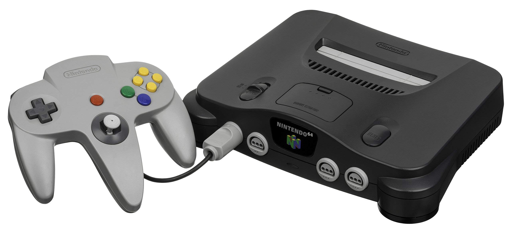

L'histoitre de Nintendo :
Les débuts de Nintendo :
Nintendo a été fondée en 1889 à Kyoto, au Japon, par Fusajiro Yamauchi. À l'origine, l'entreprise fabriquait des cartes à jouer japonaises traditionnelles, appelées hanafuda. Après plusieurs décennies et diverses tentatives dans des secteurs variés (notamment les jouets et les hôtels), Nintendo s’est réinventée dans les années 1970 pour se concentrer sur les jeux électroniques et les consoles. Cette transition a été marquée par des succès comme la console Color TV-Game et les premières bornes d'arcade. Nintendo a alors posé les bases de son futur empire dans l'industrie du jeu vidéo, un domaine dans lequel elle deviendra un leader mondial.
Les consoles marquantes:
SNES
La Super Nintendo Entertainment System (SNES), lancée par Nintendo en 1990 au Japon (et en 1991 en Amérique du Nord), est une console de salon 16 bits qui a révolutionné l'industrie du jeu vidéo. Elle est connue pour ses graphismes avancés, ses effets sonores immersifs et sa manette ergonomique. La SNES propose une incroyable bibliothèque de jeux, dont des classiques comme Super Mario World, The Legend of Zelda: A Link to the Past, et Super Metroid. Elle a renforcé la popularité de Nintendo et reste une console emblématique pour les fans de rétro-gaming.
NES
La Nintendo Entertainment System (NES), lancée en 1983 au Japon (sous le nom de Famicom) et en 1985 en Amérique du Nord, est la console de salon qui a relancé l'industrie du jeu vidéo après le crash de 1983. Avec ses graphismes 8 bits et une manette simple mais efficace, la NES a popularisé des franchises légendaires comme Super Mario Bros., The Legend of Zelda, et Metroid. Grâce à sa large bibliothèque de jeux et son succès mondial, elle a fait de Nintendo un acteur majeur et reste une icône du rétro-gaming.
N64
La Nintendo 64 (N64), sortie en 1996, est la première console de Nintendo à utiliser des graphismes en 3D, ce qui a marqué un tournant majeur dans l'industrie du jeu vidéo. Elle est équipée d’une manette innovante avec un stick analogique, permettant des mouvements précis dans des environnements tridimensionnels. La N64 est célèbre pour des jeux emblématiques comme Super Mario 64, The Legend of Zelda: Ocarina of Time, et GoldenEye 007. Malgré la concurrence du format CD de Sony, elle est devenue une console culte pour ses avancées techniques et ses jeux révolutionnaires.
Gameboy

La Game Boy est une console portable de jeux vidéo développée par Nintendo et sortie en 1989. Elle est célèbre pour son écran monochrome, sa durabilité et sa bibliothèque de jeux iconiques comme Tetris et Pokémon. Elle fonctionne avec des cartouches de jeu interchangeables et utilise des piles, ce qui la rend facilement transportable. Grâce à son succès mondial et à sa simplicité, elle est devenue un symbole de l’histoire des jeux vidéo et a marqué toute une génération de joueurs.